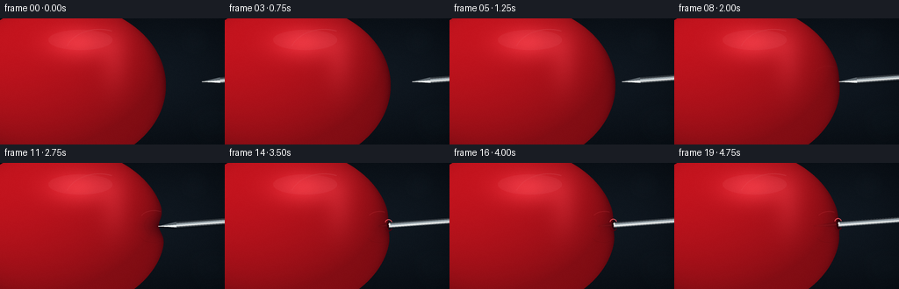
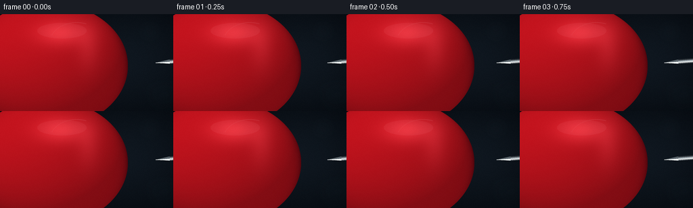

CODING AGENTS AS PIXEL WORLD MODELS
traex/GPT-5.6-Sol · mechanics_0033
点击播放 · 原生 RGB 像素
逐轮保存的候选
回放视频、检查图与代码变化。
每份候选均可单独播放。实际图片检查记录在下方工具轨迹中。
候选 01播放与检查图
点击播放 · 原生 RGB 像素


展开代码变化
--- 上一保存版本
+++ 本次保存版本
@@ -0,0 +1,287 @@
+from pathlib import Path
+import json
+import math
+import numpy as np
+from PIL import Image, ImageDraw, ImageFilter
+import artifact_io
+
+CASE_DIR = Path(__file__).resolve().parent
+SPEC = json.loads((CASE_DIR / "task_spec.json").read_text())
+W, H = int(SPEC["width"]), int(SPEC["height"])
+N = int(SPEC["frames"])
+S = 4 # supersampling for smooth macro edges
+SW, SH = W * S, H * S
+
+
+def ease(u):
+ u = np.clip(u, 0.0, 1.0)
+ return u * u * (3.0 - 2.0 * u)
+
+
+def sc_pts(points):
+ return [(round(x * S), round(y * S)) for x, y in points]
+
+
+def background(seed=113):
+ """Fixed dark studio background with extremely soft, out-of-focus highlights."""
+ rng = np.random.default_rng(seed)
+ yy, xx = np.mgrid[0:SH, 0:SW]
+ X, Y = xx / S, yy / S
+ # Cool charcoal gradient, gently lighter behind the action.
+ glow = np.exp(-(((X - 185) / 105) ** 2 + ((Y - 67) / 75) ** 2))
+ vignette = np.clip(((X - W / 2) / 175) ** 2 + ((Y - H / 2) / 105) ** 2, 0, 1)
+ grain = rng.normal(0, 0.75, (SH, SW))
+ arr = np.empty((SH, SW, 3), dtype=np.float32)
+ arr[..., 0] = 8.5 + 7.5 * glow - 3.0 * vignette + grain
+ arr[..., 1] = 13.0 + 11.0 * glow - 3.5 * vignette + grain
+ arr[..., 2] = 18.5 + 14.0 * glow - 4.0 * vignette + grain
+ arr = np.clip(arr, 0, 255).astype(np.uint8)
+ im = Image.fromarray(arr, "RGB")
+
+ # Sparse bokeh is intentionally subtle so the silhouette remains dominant.
+ bokeh = Image.new("RGBA", (SW, SH), (0, 0, 0, 0))
+ d = ImageDraw.Draw(bokeh, "RGBA")
+ for x, y, r, color in [
+ (221, 26, 17, (62, 90, 101, 16)),
+ (238, 119, 24, (43, 72, 80, 12)),
+ (202, 95, 10, (85, 98, 91, 9)),
+ ]:
+ d.ellipse((S*(x-r), S*(y-r), S*(x+r), S*(y+r)), fill=color)
+ bokeh = bokeh.filter(ImageFilter.GaussianBlur(10*S))
+ return Image.alpha_composite(im.convert("RGBA"), bokeh)
+
+
+BASE_BG = background()
+yy, xx = np.mgrid[0:SH, 0:SW]
+X, Y = xx / S, yy / S
+# A single fixed material-grain field avoids temporal shimmer.
+rng = np.random.default_rng(20261110)
+material_grain = rng.normal(0, 1, (SH, SW)).astype(np.float32)
+
+
+def motion(frame):
+ """Needle tip and latex indentation, with contact then membrane release."""
+ if frame <= 7:
+ u = ease(frame / 7.0)
+ tip_x = 230.0 + (188.2 - 230.0) * u
+ indent = 0.0
+ phase = "approach"
+ elif frame <= 13:
+ u = ease((frame - 7) / 6.0)
+ indent = 10.8 * u
+ # The point remains locked to the moving skin during compression.
+ tip_x = 188.2 - indent
+ phase = "press"
+ else:
+ u = ease((frame - 14) / 5.0)
+ tip_x = 174.6 + (158.5 - 174.6) * u
+ # Taut rubber springs back around the shaft after the point passes through.
+ indent = 2.8 - 1.3 * u
+ phase = "puncture"
+ return tip_x, indent, phase
+
+
+def draw_balloon(frame, indent):
+ """Render an inflated red latex ellipsoid with a locally deformable boundary."""
+ cx, cy, rx, ry = 71.0, 76.5, 118.0, 93.5
+ nx = (X - cx) / rx
+ ny = (Y - cy) / ry
+ radial = nx * nx + ny * ny
+ inside_ellipse = radial <= 1.0
+
+ yterm = np.clip(1.0 - ny * ny, 0.0, 1.0)
+ natural_right = cx + rx * np.sqrt(yterm)
+ # Narrow Gaussian dimple centered exactly on the needle axis.
+ local = np.exp(-((Y - 72.0) / 11.5) ** 2)
+ # Add a broader, shallow shoulder so compression reads as elastic rather than cut out.
+ deformation = indent * (0.82 * local + 0.18 * np.exp(-((Y - 72.0) / 25.0) ** 2))
+ right_edge = natural_right - deformation
+ mask = inside_ellipse & (X <= right_edge)
+
+ z = np.sqrt(np.clip(1.0 - radial, 0.0, 1.0))
+ # Ellipsoid normal and large softbox lighting from upper-left/front.
+ normal = np.stack((nx * 0.88, ny * 0.95, z * 1.15), axis=-1)
+ normal /= np.maximum(np.linalg.norm(normal, axis=-1, keepdims=True), 1e-4)
+ light = np.array([-0.46, -0.64, 0.61], dtype=np.float32)
+ light /= np.linalg.norm(light)
+ diffuse = np.maximum(np.sum(normal * light, axis=-1), 0.0)
+ rim = np.power(np.clip(z, 0, 1), 0.42)
+
+ # Broad curved reflections typical of stretched glossy latex.
+ softbox = np.exp(-(((X - 91.0) / 37.0) ** 2 + ((Y - 28.0) / 19.0) ** 2))
+ streak = np.exp(-(((X - 130.0) / 17.0) ** 2 + ((Y - 48.0) / 34.0) ** 2)) * 0.30
+ sheen = softbox * 0.72 + streak
+
+ # Thin red rubber darkens at its grazing edge, especially around the dimple.
+ edge_distance = np.maximum(right_edge - X, 0.0)
+ edge_dark = np.exp(-edge_distance / 5.2) * np.exp(-((Y - 72.0) / 48.0) ** 2)
+ dimple_shadow = (indent / 10.8) * np.exp(-((X - (right_edge - 5.5)) / 15.0) ** 2 - ((Y - 72.0) / 15.0) ** 2)
+
+ illumination = 0.43 + 0.47 * diffuse + 0.14 * rim
+ red = 139.0 * illumination + 55.0 + 68.0 * sheen - 46.0 * edge_dark - 22.0 * dimple_shadow
+ green = 15.0 * illumination + 5.0 + 39.0 * sheen - 7.0 * edge_dark
+ blue = 22.0 * illumination + 8.0 + 42.0 * sheen - 5.0 * edge_dark
+ # Nearly invisible fixed rubber texture lends realism without visual noise.
+ red += material_grain * 0.9
+ green += material_grain * 0.28
+ blue += material_grain * 0.32
+
+ rgba = np.zeros((SH, SW, 4), dtype=np.uint8)
+ rgba[..., 0] = np.clip(red, 0, 255).astype(np.uint8)
+ rgba[..., 1] = np.clip(green, 0, 255).astype(np.uint8)
+ rgba[..., 2] = np.clip(blue, 0, 255).astype(np.uint8)
+ rgba[..., 3] = mask.astype(np.uint8) * 255
+ balloon = Image.fromarray(rgba, "RGBA")
+
+ # Painted overlays: a long soft reflection and dimple tension folds.
+ overlay = Image.new("RGBA", (SW, SH), (0, 0, 0, 0))
+ d = ImageDraw.Draw(overlay, "RGBA")
+ d.ellipse((S*55, S*13, S*128, S*36), fill=(255, 167, 173, 16))
+ d.arc((S*73, S*12, S*153, S*73), 202, 291, fill=(255, 215, 218, 22), width=max(1, S))
+
+ if frame >= 8 and frame <= 13:
+ strength = (frame - 7) / 6.0
+ # Short curved stress lines converge toward the contact point.
+ alpha = int(42 * strength)
+ d.arc((S*160, S*54, S*191, S*72), 200, 300, fill=(255, 108, 116, alpha), width=S)
+ d.arc((S*158, S*71, S*191, S*91), 58, 161, fill=(91, 5, 14, alpha), width=S)
+ d.arc((S*164, S*60, S*188, S*83), 103, 257, fill=(89, 4, 12, int(alpha*.65)), width=S)
+
+ if frame >= 14:
+ # Slight radial tension wrinkles remain as the membrane closes around steel.
+ a = 38
+ d.arc((S*163, S*55, S*190, S*71), 205, 296, fill=(242, 72, 83, a), width=S)
+ d.arc((S*161, S*74, S*190, S*91), 62, 157, fill=(91, 4, 13, a), width=S)
+ return balloon, overlay, right_edge
+
+
+def axis_geometry(start_x):
+ """Needle axis points slightly upward toward the right."""
+ ang = math.radians(-4.2)
+ dx, dy = math.cos(ang), math.sin(ang)
+ nx, ny = -dy, dx
+ y0 = 72.0
+ return np.array([start_x, y0]), np.array([dx, dy]), np.array([nx, ny])
+
+
+def draw_complete_needle(canvas, tip_x, contact_shadow=False):
+ """Draw the exposed sharp point and cylindrical steel shaft."""
+ tip, axis, normal = axis_geometry(tip_x)
+ shoulder = tip + axis * 20.5
+ end = tip + axis * 100.0
+ # Soft cast shadow below metal (important at contact).
+ shadow = Image.new("RGBA", canvas.size, (0, 0, 0, 0))
+ ds = ImageDraw.Draw(shadow, "RGBA")
+ shp = [shoulder + normal*3.5 + np.array([0, 1.2]), end + normal*3.5 + np.array([0, 1.2]),
+ end - normal*3.5 + np.array([0, 1.2]), shoulder - normal*3.5 + np.array([0, 1.2]), tip + np.array([0, 1.2])]
+ ds.polygon(sc_pts(shp), fill=(0, 0, 0, 74 if contact_shadow else 48))
+ shadow = shadow.filter(ImageFilter.GaussianBlur(1.2*S))
+ canvas.alpha_composite(shadow)
+
+ metal = Image.new("RGBA", canvas.size, (0, 0, 0, 0))
+ d = ImageDraw.Draw(metal, "RGBA")
+ # Shaft with multiple longitudinal bands gives a rounded polished-steel look.
+ d.polygon(sc_pts([shoulder+normal*3.25, end+normal*3.25, end-normal*3.25, shoulder-normal*3.25]),
+ fill=(82, 89, 95, 255))
+ d.polygon(sc_pts([shoulder+normal*2.0, end+normal*2.0, end+normal*0.20, shoulder+normal*0.20]),
+ fill=(222, 228, 230, 255))
+ d.polygon(sc_pts([shoulder+normal*0.20, end+normal*0.20, end-normal*1.35, shoulder-normal*1.35]),
+ fill=(158, 169, 175, 255))
+ d.line(sc_pts([shoulder+normal*1.55, end+normal*1.55]), fill=(255, 255, 252, 218), width=S)
+ d.line(sc_pts([shoulder-normal*2.65, end-normal*2.65]), fill=(40, 46, 51, 230), width=S)
+ # Long tapered bevel; a bright edge runs all the way to the sharp vertex.
+ d.polygon(sc_pts([tip, shoulder+normal*3.2, shoulder-normal*3.2]), fill=(137, 149, 155, 255))
+ d.polygon(sc_pts([tip, shoulder+normal*2.65, shoulder+normal*0.05]), fill=(236, 241, 241, 255))
+ d.polygon(sc_pts([tip, shoulder+normal*0.05, shoulder-normal*3.15]), fill=(91, 101, 108, 255))
+ d.line(sc_pts([tip, shoulder+normal*2.35]), fill=(255, 255, 252, 245), width=max(S, 2))
+ canvas.alpha_composite(metal)
+
+
+def draw_subsurface_and_puncture(canvas, frame, tip_x):
+ """After breakthrough, the buried point is a faint shadow and only the outer shaft is exposed."""
+ entry_x = 187.0
+ tip, axis, normal = axis_geometry(tip_x)
+ entry_y = 72.0 + (entry_x - tip_x) * axis[1] / axis[0]
+ entry = np.array([entry_x, entry_y])
+
+ # Blurred dark taper visible through stretched red membrane, never bright silver.
+ under = Image.new("RGBA", canvas.size, (0, 0, 0, 0))
+ du = ImageDraw.Draw(under, "RGBA")
+ du.polygon(sc_pts([tip, entry+normal*2.3, entry-normal*2.3]), fill=(45, 0, 7, 72))
+ du.line(sc_pts([tip+axis*3, entry-axis*1]), fill=(255, 91, 97, 22), width=S)
+ under = under.filter(ImageFilter.GaussianBlur(0.65*S))
+ canvas.alpha_composite(under)
+
+ # Puncture itself: a tight vertical slit with raised red lips.
+ hole = Image.new("RGBA", canvas.size, (0, 0, 0, 0))
+ dh = ImageDraw.Draw(hole, "RGBA")
+ opening = 0.75 + 0.45 * ease((frame - 14) / 5.0)
+ dh.ellipse((S*(entry_x-2.1), S*(entry_y-5.0*opening), S*(entry_x+2.5), S*(entry_y+5.0*opening)),
+ fill=(37, 1, 7, 238))
+ dh.arc((S*(entry_x-4.3), S*(entry_y-6.8), S*(entry_x+3.7), S*(entry_y+0.8)),
+ 184, 353, fill=(255, 92, 100, 210), width=S)
+ dh.arc((S*(entry_x-4.1), S*(entry_y-0.5), S*(entry_x+3.7), S*(entry_y+7.1)),
+ 7, 177, fill=(90, 2, 12, 230), width=S)
+ canvas.alpha_composite(hole)
+
+ # Exposed shaft begins at the hole; the sharp point is now inside the balloon.
+ ext = Image.new("RGBA", canvas.size, (0, 0, 0, 0))
+ de = ImageDraw.Draw(ext, "RGBA")
+ _, axis2, normal2 = axis_geometry(entry_x)
+ start = np.array([entry_x-0.1, entry_y])
+ end = start + axis2*84
+ de.polygon(sc_pts([start+normal2*3.0, end+normal2*3.0, end-normal2*3.0, start-normal2*3.0]),
+ fill=(100, 108, 114, 255))
+ de.polygon(sc_pts([start+normal2*2.0, end+normal2*2.0, end+normal2*0.2, start+normal2*0.2]),
+ fill=(228, 233, 234, 255))
+ de.polygon(sc_pts([start+normal2*0.2, end+normal2*0.2, end-normal2*1.45, start-normal2*1.45]),
+ fill=(150, 161, 168, 255))
+ de.line(sc_pts([start+normal2*1.55, end+normal2*1.55]), fill=(255,255,252,220), width=S)
+ de.line(sc_pts([start-normal2*2.55, end-normal2*2.55]), fill=(42,47,52,230), width=S)
+ canvas.alpha_composite(ext)
+
+ # A tiny bright steel glint at the slit makes the crossing plane unambiguous.
+ glint = Image.new("RGBA", canvas.size, (0,0,0,0))
+ dg = ImageDraw.Draw(glint, "RGBA")
+ dg.ellipse((S*(entry_x-0.4), S*(entry_y-2.2), S*(entry_x+1.7), S*(entry_y+0.2)), fill=(247,247,239,220))
+ canvas.alpha_composite(glint)
+
+
+def render_frame(i):
+ tip_x, indent, phase = motion(i)
+ canvas = BASE_BG.copy()
+ balloon, overlays, _ = draw_balloon(i, indent)
+ canvas.alpha_composite(balloon)
+ canvas.alpha_composite(overlays)
+
+ if phase != "puncture":
+ # A tiny contact bruise appears only while pressure is building.
+ if phase == "press" and i >= 8:
+ mark = Image.new("RGBA", canvas.size, (0,0,0,0))
+ dm = ImageDraw.Draw(mark, "RGBA")
+ a = int(30 + 60*(i-8)/5)
+ dm.ellipse((S*(tip_x-1.5), S*69.7, S*(tip_x+2.5), S*74.4), fill=(54,0,8,a))
+ canvas.alpha_composite(mark)
+ draw_complete_needle(canvas, tip_x, contact_shadow=(phase == "press"))
+ else:
+ draw_subsurface_and_puncture(canvas, i, tip_x)
+
+ # High-quality reduction supplies antialiasing and a photographic softness.
+ rgb = canvas.convert("RGB").resize((W, H), Image.Resampling.LANCZOS)
+ arr = np.asarray(rgb).copy()
+ # Minimal fixed sensor grain at delivery resolution.
+ small_rng = np.random.default_rng(9000)
+ noise = small_rng.normal(0, 0.28, arr.shape[:2])[..., None]
+ arr = np.clip(arr.astype(np.float32) + noise, 0, 255).astype(np.uint8)
+ return arr
+
+
+def main():
+ frames = np.stack([render_frame(i) for i in range(N)], axis=0).astype(np.uint8)
+ assert frames.shape == (N, H, W, 3)
+ artifact_io.save(frames, CASE_DIR)
+ print(f"Saved {N} RGB frames at {W}x{H} to {CASE_DIR}")
+
+
+if __name__ == "__main__":
+ main()
可观测工具轨迹
实际执行的命令与返回图片。
命令 1exit 0
/bin/bash -lc "cat prompt.txt && printf '\\n--- GENERATION_RULES.md ---\\n' && cat GENERATION_RULES.md"
命令 2exit 0
/bin/bash -lc "cat task_spec.json && printf '\\n--- FILES ---\\n' && find . -maxdepth 2 -type f -printf '%p\\n' | sort"
命令 3exit 0
/bin/bash -lc "command -v ffmpeg; command -v ffprobe; command -v blender; command -v convert; python3 --version; python3 - <<'PY' mods=['numpy','PIL','cv2','matplotlib','cairo','moviepy'] for m in mods: try: x=__import__(m); print(m, 'OK', getattr(x,'__version__','')) except Exception as e: print(m, 'NO', type(e).__name__) PY"
命令 4exit 0
/bin/bash -lc 'cat artifact_io.py'
命令 5exit 0
/bin/bash -lc "cat > generate.py <<'PY'
from pathlib import Path
import json
import math
import numpy as np
from PIL import Image, ImageDraw, ImageFilter
import artifact_io
CASE_DIR = Path(__file__).resolve().parent
SPEC = json.loads((CASE_DIR / \"task_spec.json\").read_text())
W, H = int(SPEC[\"width\"]), int(SPEC[\"height\"])
N = int(SPEC[\"frames\"])
S = 4 # supersampling for smooth macro edges
SW, SH = W * S, H * S
def ease(u):
u = np.clip(u, 0.0, 1.0)
return u * u * (3.0 - 2.0 * u)
def sc_pts(points):
return [(round(x * S), round(y * S)) for x, y in points]
def background(seed=113):
\"\"\"Fixed dark studio background with extremely soft, out-of-focus highlights.\"\"\"
rng = np.random.default_rng(seed)
yy, xx = np.mgrid[0:SH, 0:SW]
X, Y = xx / S, yy / S
# Cool charcoal gradient, gently lighter behind the action.
glow = np.exp(-(((X - 185) / 105) ** 2 + ((Y - 67) / 75) ** 2))
vignette = np.clip(((X - W / 2) / 175) ** 2 + ((Y - H / 2) / 105) ** 2, 0, 1)
grain = rng.normal(0, 0.75, (SH, SW))
arr = np.empty((SH, SW, 3), dtype=np.float32)
arr[..., 0] = 8.5 + 7.5 * glow - 3.0 * vignette + grain
arr[..., 1] = 13.0 + 11.0 * glow - 3.5 * vignette + grain
arr[..., 2] = 18.5 + 14.0 * glow - 4.0 * vignette + grain
arr = np.clip(arr, 0, 255).astype(np.uint8)
im = Image.fromarray(arr, \"RGB\")
# Sparse bokeh is intentionally subtle so the silhouette remains dominant.
bokeh = Image.new(\"RGBA\", (SW, SH), (0, 0, 0, 0))
d = ImageDraw.Draw(bokeh, \"RGBA\")
for x, y, r, color in [
(221, 26, 17, (62, 90, 101, 16)),
(238, 119, 24, (43, 72, 80, 12)),
(202, 95, 10, (85, 98, 91, 9)),
]:
d.ellipse((S*(x-r), S*(y-r), S*(x+r), S*(y+r)), fill=color)
bokeh = bokeh.filter(ImageFilter.GaussianBlur(10*S))
return Image.alpha_composite(im.convert(\"RGBA\"), bokeh)
BASE_BG = background()
yy, xx = np.mgrid[0:SH, 0:SW]
X, Y = xx / S, yy / S
# A single fixed material-grain field avoids temporal shimmer.
rng = np.random.default_rng(20261110)
material_grain = rng.normal(0, 1, (SH, SW)).astype(np.float32)
def motion(frame):
\"\"\"Needle tip and latex indentation, with contact then membrane release.\"\"\"
if frame <= 7:
u = ease(frame / 7.0)
tip_x = 230.0 + (188.2 - 230.0) * u
indent = 0.0
phase = \"approach\"
elif frame <= 13:
u = ease((frame - 7) / 6.0)
indent = 10.8 * u
# The point remains locked to the moving skin during compression.
tip_x = 188.2 - indent
phase = \"press\"
else:
u = ease((frame - 14) / 5.0)
tip_x = 174.6 + (158.5 - 174.6) * u
# Taut rubber springs back around the shaft after the point passes through.
indent = 2.8 - 1.3 * u
phase = \"puncture\"
return tip_x, indent, phase
def draw_balloon(frame, indent):
\"\"\"Render an inflated red latex ellipsoid with a locally deformable boundary.\"\"\"
cx, cy, rx, ry = 71.0, 76.5, 118.0, 93.5
nx = (X - cx) / rx
ny = (Y - cy) / ry
radial = nx * nx + ny * ny
inside_ellipse = radial <= 1.0
yterm = np.clip(1.0 - ny * ny, 0.0, 1.0)
natural_right = cx + rx * np.sqrt(yterm)
# Narrow Gaussian dimple centered exactly on the needle axis.
local = np.exp(-((Y - 72.0) / 11.5) ** 2)
# Add a broader, shallow shoulder so compression reads as elastic rather than cut out.
deformation = indent * (0.82 * local + 0.18 * np.exp(-((Y - 72.0) / 25.0) ** 2))
right_edge = natural_right - deformation
mask = inside_ellipse & (X <= right_edge)
z = np.sqrt(np.clip(1.0 - radial, 0.0, 1.0))
# Ellipsoid normal and large softbox lighting from upper-left/front.
normal = np.stack((nx * 0.88, ny * 0.95, z * 1.15), axis=-1)
normal /= np.maximum(np.linalg.norm(normal, axis=-1, keepdims=True), 1e-4)
light = np.array([-0.46, -0.64, 0.61], dtype=np.float32)
light /= np.linalg.norm(light)
diffuse = np.maximum(np.sum(normal * light, axis=-1), 0.0)
rim = np.power(np.clip(z, 0, 1), 0.42)
# Broad curved reflections typical of stretched glossy latex.
softbox = np.exp(-(((X - 91.0) / 37.0) ** 2 + ((Y - 28.0) / 19.0) ** 2))
streak = np.exp(-(((X - 130.0) / 17.0) ** 2 + ((Y - 48.0) / 34.0) ** 2)) * 0.30
sheen = softbox * 0.72 + streak
# Thin red rubber darkens at its grazing edge, especially around the dimple.
edge_distance = np.maximum(right_edge - X, 0.0)
edge_dark = np.exp(-edge_distance / 5.2) * np.exp(-((Y - 72.0) / 48.0) ** 2)
dimple_shadow = (indent / 10.8) * np.exp(-((X - (right_edge - 5.5)) / 15.0) ** 2 - ((Y - 72.0) / 15.0) ** 2)
illumination = 0.43 + 0.47 * diffuse + 0.14 * rim
red = 139.0 * illumination + 55.0 + 68.0 * sheen - 46.0 * edge_dark - 22.0 * dimple_shadow
green = 15.0 * illumination + 5.0 + 39.0 * sheen - 7.0 * edge_dark
blue = 22.0 * illumination + 8.0 + 42.0 * sheen - 5.0 * edge_dark
# Nearly invisible fixed rubber texture lends realism without visual noise.
red += material_grain * 0.9
green += material_grain * 0.28
blue += material_grain * 0.32
rgba = np.zeros((SH, SW, 4), dtype=np.uint8)
rgba[..., 0] = np.clip(red, 0, 255).astype(np.uint8)
rgba[..., 1] = np.clip(green, 0, 255).astype(np.uint8)
rgba[..., 2] = np.clip(blue, 0, 255).astype(np.uint8)
rgba[..., 3] = mask.astype(np.uint8) * 255
balloon = Image.fromarray(rgba, \"RGBA\")
# Painted overlays: a long soft reflection and dimple tension folds.
overlay = Image.new(\"RGBA\", (SW, SH), (0, 0, 0, 0))
d = ImageDraw.Draw(overlay, \"RGBA\")
d.ellipse((S*55, S*13, S*128, S*36), fill=(255, 167, 173, 16))
d.arc((S*73, S*12, S*153, S*73), 202, 291, fill=(255, 215, 218, 22), width=max(1, S))
if frame >= 8 and frame <= 13:
strength = (frame - 7) / 6.0
# Short curved stress lines converge toward the contact point.
alpha = int(42 * strength)
d.arc((S*160, S*54, S*191, S*72), 200, 300, fill=(255, 108, 116, alpha), width=S)
d.arc((S*158, S*71, S*191, S*91), 58, 161, fill=(91, 5, 14, alpha), width=S)
d.arc((S*164, S*60, S*188, S*83), 103, 257, fill=(89, 4, 12, int(alpha*.65)), width=S)
if frame >= 14:
# Slight radial tension wrinkles remain as the membrane closes around steel.
a = 38
d.arc((S*163, S*55, S*190, S*71), 205, 296, fill=(242, 72, 83, a), width=S)
d.arc((S*161, S*74, S*190, S*91), 62, 157, fill=(91, 4, 13, a), width=S)
return balloon, overlay, right_edge
def axis_geometry(start_x):
\"\"\"Needle axis points slightly upward toward the right.\"\"\"
ang = math.radians(-4.2)
dx, dy = math.cos(ang), math.sin(ang)
nx, ny = -dy, dx
y0 = 72.0
return np.array([start_x, y0]), np.array([dx, dy]), np.array([nx, ny])
def draw_complete_needle(canvas, tip_x, contact_shadow=False):
\"\"\"Draw the exposed sharp point and cylindrical steel shaft.\"\"\"
tip, axis, normal = axis_geometry(tip_x)
shoulder = tip + axis * 20.5
end = tip + axis * 100.0
# Soft cast shadow below metal (important at contact).
shadow = Image.new(\"RGBA\", canvas.size, (0, 0, 0, 0))
ds = ImageDraw.Draw(shadow, \"RGBA\")
shp = [shoulder + normal*3.5 + np.array([0, 1.2]), end + normal*3.5 + np.array([0, 1.2]),
end - normal*3.5 + np.array([0, 1.2]), shoulder - normal*3.5 + np.array([0, 1.2]), tip + np.array([0, 1.2])]
ds.polygon(sc_pts(shp), fill=(0, 0, 0, 74 if contact_shadow else 48))
shadow = shadow.filter(ImageFilter.GaussianBlur(1.2*S))
canvas.alpha_composite(shadow)
metal = Image.new(\"RGBA\", canvas.size, (0, 0, 0, 0))
d = ImageDraw.Draw(metal, \"RGBA\")
# Shaft with multiple longitudinal bands gives a rounded polished-steel look.
d.polygon(sc_pts([shoulder+normal*3.25, end+normal*3.25, end-normal*3.25, shoulder-normal*3.25]),
fill=(82, 89, 95, 255))
d.polygon(sc_pts([shoulder+normal*2.0, end+normal*2.0, end+normal*0.20, shoulder+normal*0.20]),
fill=(222, 228, 230, 255))
d.polygon(sc_pts([shoulder+normal*0.20, end+normal*0.20, end-normal*1.35, shoulder-normal*1.35]),
fill=(158, 169, 175, 255))
d.line(sc_pts([shoulder+normal*1.55, end+normal*1.55]), fill=(255, 255, 252, 218), width=S)
d.line(sc_pts([shoulder-normal*2.65, end-normal*2.65]), fill=(40, 46, 51, 230), width=S)
# Long tapered bevel; a bright edge runs all the way to the sharp vertex.
d.polygon(sc_pts([tip, shoulder+normal*3.2, shoulder-normal*3.2]), fill=(137, 149, 155, 255))
d.polygon(sc_pts([tip, shoulder+normal*2.65, shoulder+normal*0.05]), fill=(236, 241, 241, 255))
d.polygon(sc_pts([tip, shoulder+normal*0.05, shoulder-normal*3.15]), fill=(91, 101, 108, 255))
d.line(sc_pts([tip, shoulder+normal*2.35]), fill=(255, 255, 252, 245), width=max(S, 2))
canvas.alpha_composite(metal)
def draw_subsurface_and_puncture(canvas, frame, tip_x):
\"\"\"After breakthrough, the buried point is a faint shadow and only the outer shaft is exposed.\"\"\"
entry_x = 187.0
tip, axis, normal = axis_geometry(tip_x)
entry_y = 72.0 + (entry_x - tip_x) * axis[1] / axis[0]
entry = np.array([entry_x, entry_y])
# Blurred dark taper visible through stretched red membrane, never bright silver.
under = Image.new(\"RGBA\", canvas.size, (0, 0, 0, 0))
du = ImageDraw.Draw(under, \"RGBA\")
du.polygon(sc_pts([tip, entry+normal*2.3, entry-normal*2.3]), fill=(45, 0, 7, 72))
du.line(sc_pts([tip+axis*3, entry-axis*1]), fill=(255, 91, 97, 22), width=S)
under = under.filter(ImageFilter.GaussianBlur(0.65*S))
canvas.alpha_composite(under)
# Puncture itself: a tight vertical slit with raised red lips.
hole = Image.new(\"RGBA\", canvas.size, (0, 0, 0, 0))
dh = ImageDraw.Draw(hole, \"RGBA\")
opening = 0.75 + 0.45 * ease((frame - 14) / 5.0)
dh.ellipse((S*(entry_x-2.1), S*(entry_y-5.0*opening), S*(entry_x+2.5), S*(entry_y+5.0*opening)),
fill=(37, 1, 7, 238))
dh.arc((S*(entry_x-4.3), S*(entry_y-6.8), S*(entry_x+3.7), S*(entry_y+0.8)),
184, 353, fill=(255, 92, 100, 210), width=S)
dh.arc((S*(entry_x-4.1), S*(entry_y-0.5), S*(entry_x+3.7), S*(entry_y+7.1)),
7, 177, fill=(90, 2, 12, 230), width=S)
canvas.alpha_composite(hole)
# Exposed shaft begins at the hole; the sharp point is now inside the balloon.
ext = Image.new(\"RGBA\", canvas.size, (0, 0, 0, 0))
de = ImageDraw.Draw(ext, \"RGBA\")
_, axis2, normal2 = axis_geometry(entry_x)
start = np.array([entry_x-0.1, entry_y])
end = start + axis2*84
de.polygon(sc_pts([start+normal2*3.0, end+normal2*3.0, end-normal2*3.0, start-normal2*3.0]),
fill=(100, 108, 114, 255))
de.polygon(sc_pts([start+normal2*2.0, end+normal2*2.0, end+normal2*0.2, start+normal2*0.2]),
fill=(228, 233, 234, 255))
de.polygon(sc_pts([start+normal2*0.2, end+normal2*0.2, end-normal2*1.45, start-normal2*1.45]),
fill=(150, 161, 168, 255))
de.line(sc_pts([start+normal2*1.55, end+normal2*1.55]), fill=(255,255,252,220), width=S)
de.line(sc_pts([start-normal2*2.55, end-normal2*2.55]), fill=(42,47,52,230), width=S)
canvas.alpha_composite(ext)
# A tiny bright steel glint at the slit makes the crossing plane unambiguous.
glint = Image.new(\"RGBA\", canvas.size, (0,0,0,0))
dg = ImageDraw.Draw(glint, \"RGBA\")
dg.ellipse((S*(entry_x-0.4), S*(entry_y-2.2), S*(entry_x+1.7), S*(entry_y+0.2)), fill=(247,247,239,220))
canvas.alpha_composite(glint)
def render_frame(i):
tip_x, indent, phase = motion(i)
canvas = BASE_BG.copy()
balloon, overlays, _ = draw_balloon(i, indent)
canvas.alpha_composite(balloon)
canvas.alpha_composite(overlays)
if phase "'!= "puncture":
# A tiny contact bruise appears only while pressure is building.
if phase == "press" and i >= 8:
mark = Image.new("RGBA", canvas.size, (0,0,0,0))
dm = ImageDraw.Draw(mark, "RGBA")
a = int(30 + 60*(i-8)/5)
dm.ellipse((S*(tip_x-1.5), S*69.7, S*(tip_x+2.5), S*74.4), fill=(54,0,8,a))
canvas.alpha_composite(mark)
draw_complete_needle(canvas, tip_x, contact_shadow=(phase == "press"))
else:
draw_subsurface_and_puncture(canvas, i, tip_x)
# High-quality reduction supplies antialiasing and a photographic softness.
rgb = canvas.convert("RGB").resize((W, H), Image.Resampling.LANCZOS)
arr = np.asarray(rgb).copy()
# Minimal fixed sensor grain at delivery resolution.
small_rng = np.random.default_rng(9000)
noise = small_rng.normal(0, 0.28, arr.shape[:2])[..., None]
arr = np.clip(arr.astype(np.float32) + noise, 0, 255).astype(np.uint8)
return arr
def main():
frames = np.stack([render_frame(i) for i in range(N)], axis=0).astype(np.uint8)
assert frames.shape == (N, H, W, 3)
artifact_io.save(frames, CASE_DIR)
print(f"Saved {N} RGB frames at {W}x{H} to {CASE_DIR}")
if __name__ == "__main__":
main()
PY
python3 generate.py'命令 6exit 0
/bin/bash -lc "python3 - <<'PY'
from pathlib import Path
import numpy as np
from PIL import Image
p=Path('.')
z=np.load('pixels.npz')['pixels']
print('packed tensor', z.shape, z.dtype)
ims=np.stack([np.asarray(Image.open(f'frames/{i:02d}.png').convert('RGB')) for i in range(20)])
print('frames',ims.shape,ims.dtype,'range',ims.min(),ims.max())
for i in range(1,20):
d=np.abs(ims[i].astype(int)-ims[i-1].astype(int))
changed=np.any(d>2,axis=2).sum()
print(f'{i-1:02d}->{i:02d}: changed>2={changed:5d} mean_abs={d.mean():.3f} max={d.max()}')
print('files:')
for f in ['pixels.npz','index.html','inspection.png','transition_check.png']:
q=p/f; print(f,q.stat().st_size)
PY"命令 7exit 0
/bin/bash -lc "python3 - <<'PY'
from PIL import Image
import numpy as np
for i in [0,4,7,8,10,13,14,16,19]:
a=np.array(Image.open(f'frames/{i:02d}.png'))
# Summarize horizontal luminance/color on needle axis y=72.
row=a[72]
# red balloon run, bright steel run
red=np.where((row[:,0]>row[:,1]*2.2)&(row[:,0]>70))[0]
steel=np.where((row.mean(1)>95)&(np.max(row,axis=1)-np.min(row,axis=1)<35))[0]
print(i,'red axis', (red.min(),red.max()) if len(red) else None,'steel', (steel.min(),steel.max()) if len(steel) else None,
'samples',[(x,tuple(row[x])) for x in [158,170,178,187,190,200,220,240]])
PY"命令 8exit 0
/bin/bash -lc 'python3 -m py_compile generate.py && test $(find frames -maxdepth 1 -name '"'*.png' | wc -l) -eq 20 && echo 'generate.py compiles; 20 PNG frames present' && du -h pixels.npz index.html inspection.png"
保存候选 1 份；完成命令 8 次；可验证图片返回 0 张。原始 API 响应与完整日志保留在本地。